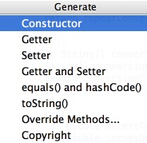

Using &shortcut:Generate; (Code | Generate) <<<<<<< HEAD (675888 Merge "Remove unused cloud tools templates") in the editor, you may easily generate getter and setter methods for any fields of your class.
======= in the editor, you can easily generate getter and setter methods for any fields of your class. >>>>>>> BRANCH (925846 Snapshot 117b3dbedca758fa08dd37d4a36cf4a2320fae03 from idea/)